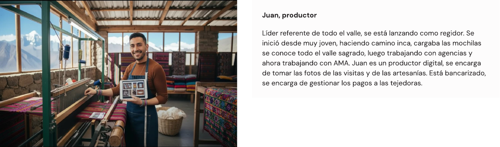
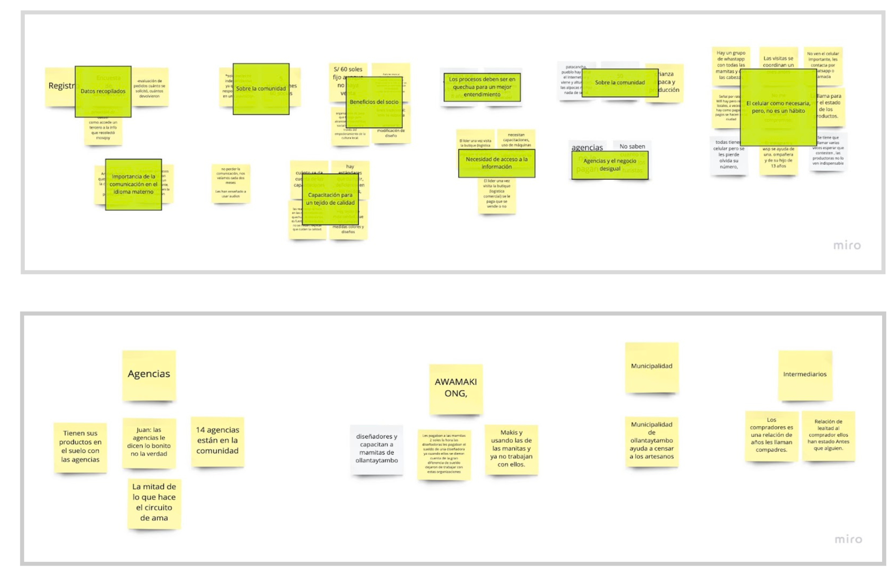
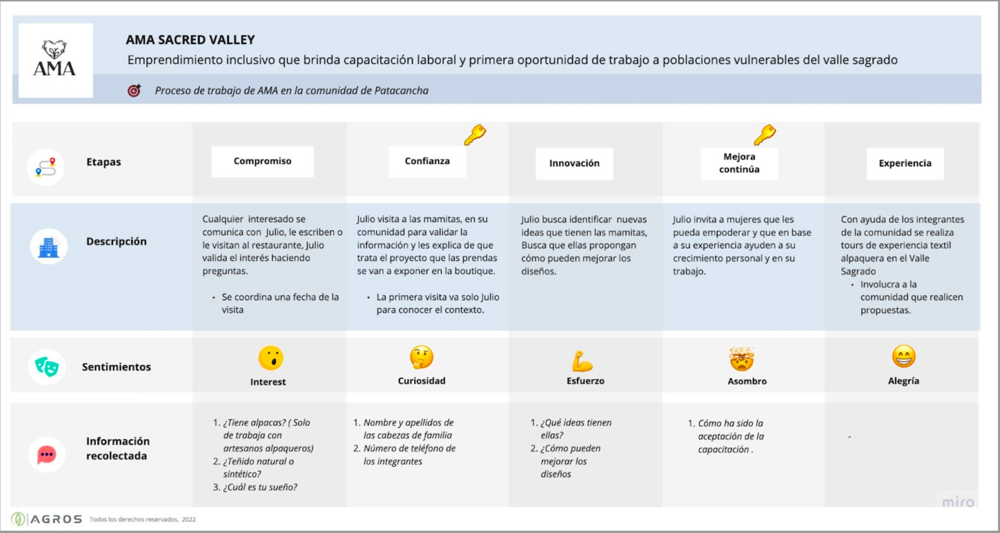

El reto
AGROS, en colaboración con CITE, buscaba identificar los roles y actores de la cadena productiva del sector textil de camélidos en Cusco, para habilitar un servicio de emisión de certificados digitales respaldados en blockchain — una identidad digital funcional para las unidades productivas de la zona.
Cuatro objetivos específicos guiaron el research: entender la cadena de valor de cada grupo, mapear su relación con entidades locales (formalidad/informalidad de su comercialización), identificar temores sobre sus productos y cómo se protegen, y conocer su nivel de digitalización y forma de comunicación.
Service Designer — investigación y facilitación
Lideré research de campo con metodología cualitativa (Design Research) — investigaciones remotas y en sitio para descubrir procesos demográficos, productivos, financieros, comerciales y sociales, entrevistas y perfilamiento de usuario, y la construcción de los entregables de service design que documentaron el ecosistema completo de actores.
De entrevistas sueltas a un ecosistema documentado
Empecé por el perfilamiento inicial: identificar productores y actores de la producción. Juan, líder referente del valle y productor digital, fue el perfil ancla — bancarizado, gestiona pagos a tejedoras y ya trabajaba con agencias antes de AMA.

Perfil ancla — Juan, productor
Sinteticé las entrevistas en un clustering de hallazgos: la importancia de comunicarse en idioma materno (quechua), la necesidad de acceso a información, la relación de poder desigual con las agencias, y el celular como herramienta necesaria pero no un hábito instalado.

Síntesis de hallazgos — afinidad de entrevistas en campo
Con esos hallazgos construí el mapa de ecosistema (Patacancha), clasificando actores como directos, conectores o indirectos según su relación con el productor central — y el service blueprint de AMA Sacred Valley, documentando las 5 etapas de su proceso (Compromiso, Confianza, Innovación, Mejora continua, Experiencia) con los sentimientos e información recolectada en cada una.

Mapa de ecosistema — Patacancha

Service blueprint — proceso de AMA en la comunidad de Patacancha
Acceso rural + barrera de idioma
El Valle Sagrado es una zona rural de difícil acceso — la mayor restricción logística del proyecto. A eso se sumó una barrera de comunicación real: varios procesos necesitaban explicarse en quechua para un entendimiento genuino, no solo traducción literal.